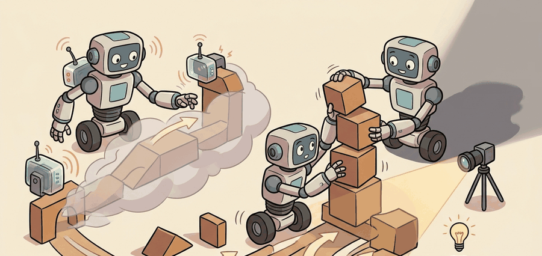

"Isaac Lab sets the stage, randomizes the props, and rings the bell. What the agent does next is the trainer's problem."
A Careful Control Loop

This section assumes familiarity with actor-critic value estimation and Generalized Advantage Estimation (GAE) from section 15.3, and with the parallel-RL rollout recipe from section 17.2. The asymmetric actor-critic pattern introduced here is extended in section 17.5, where privileged simulator state becomes a teacher signal for a deployable student policy, and the wrapper discipline developed here recurs in section 20.3 alongside domain randomization and sim-to-real transfer.
A single Anymal locomotion policy, trained overnight on 4096 parallel GPU environments, now ships on real legged robots because one team finally locked the boundary between what the simulator owns and what the optimizer touches. That boundary is what makes Isaac Lab with SKRL, rl_games, and RSL-RL so consequential right now: GPU-scale simulation is cheap, but reproducible transfer to hardware is still where most efforts fail. You will build the wrapper contract that keeps task logic in Isaac Lab and rollout logic in the runner, then verify that swapping runners leaves the science unchanged so your comparison numbers actually mean something.
Two teams train the identical Anymal-D rough-terrain policy, swap nothing but the training runner, and report fall rates that differ by a factor of three: in practice the culprit is rarely the algorithm and is usually the wrapper that quietly repacked the observations. Whether that policy walks on real hardware depends on the PhysX contact model (NVIDIA's GPU-accelerated rigid-body physics engine, which computes how the simulated robot's feet collide with terrain), the Proximal Policy Optimization (PPO) rollout semantics, the velocity-tracking reward terms, and the terrain-reset distribution all being versioned in one training artifact. Change the runner without pinning those, and the 256-seed holdout fall rate moves for reasons no one can later reconstruct.
This section develops the contract between an Isaac Lab environment and a training runner. The contract is concrete: observation groups, action clipping, reward terms, reset buffers, device, runner config, and evaluation script. As Figure 17.3A shows, one Isaac Lab task feeds several runner-specific training desks, and as Figure 17.3B details next, the wrapper is what adapts the same environment to each learner you choose.
One recurring pattern in that contract is worth naming up front: an asymmetric actor-critic setup, where the critic (the network that estimates how good a state is) sees more information during training than the actor (the network that produces actions) is allowed to see at deployment. The Theory section below defines exactly how observation groups implement that split; for now, treat the term as shorthand for "the critic gets privileged simulator state, the actor does not."
The key question is practical: if you switch from RSL-RL to rl_games or SKRL, which parts of the experiment are allowed to change, and which parts must remain identical for the comparison to mean anything?
An Isaac Lab wrapper is not neutral glue. It decides how observations are packed, whether actions are clipped, where tensors live, and how privileged states reach an asymmetric critic.
Theory
Isaac Lab tasks commonly expose named observation groups. A policy actor may receive proprioception, commands, and history, while the critic may receive privileged simulator state such as terrain height, contact flags, or object poses. In asymmetric actor-critic training, those groups must be routed explicitly so privileged information helps value learning without leaking into the deployed actor.
Named observation groups matter for embodied AI because real robots have no simulator oracle. A legged robot cannot query terrain height ahead of its foot; a manipulator cannot read the internal pose of an object it has not yet touched. If training conflates simulator-only state with sensor-available state, the policy learns a dependency that cannot be satisfied on hardware, and the robot fails at the first contact with reality rather than in simulation where failures are free.
How the groups flow through the wrapper
Isaac Lab defines observation groups in the task configuration as named dictionaries, and each key maps to an observation term function. At each step, the simulator evaluates every term, concatenates the resulting tensors per group, and stores each group in a named GPU buffer. The wrapper then reads each buffer by name and routes it to the correct runner input slot. The actor receives one concatenated tensor; the critic receives a larger one that includes privileged keys. This data pipeline enforces the separation rather than relying on convention alone. A misconfigured wrapper that reads the wrong key either raises an error or silently widens the actor tensor, rather than corrupting reward computation directly. That last point is the counterintuitive part: reward curves can look perfectly healthy for 1500 PPO iterations while the actor has been secretly reading 52 terrain-height values it will never have on the real robot, so the policy that scores highest in simulation is precisely the one most likely to fall at the first outdoor test.
Checkpoint
So far: Isaac Lab groups observations by name, the wrapper routes those named groups into separate actor and critic tensors, and a misrouted key silently changes what the actor learns to depend on without breaking anything visible during training. The next paragraphs turn that mechanism into a rule about what deployment can and cannot supply.
A policy trained on privileged simulator state it cannot access at deployment is a policy trained on a problem that does not exist in the real world. Beyond guarding that observation contract, the same wrapper layer determines how efficiently the rollout data moves, so it shapes throughput just as decisively as it shapes correctness. The runner boundary also controls performance. rl_games can work directly with GPU buffers, RSL-RL expects its own rollout storage conventions, and SKRL emphasizes transparent algorithm configuration across backends. The task is the scientific object; the runner is the optimizer and storage implementation. That distinction is what makes the wrapper the experiment boundary, not mere scaffolding.
Think of asymmetric actor-critic training like a navigator learning a mountain route with the help of a coach who has a topographic map. The coach (critic) can see every ridge and valley ahead and gives the navigator calibrated feedback on how good each decision was. The navigator (actor) only feels the slope underfoot, but over thousands of repetitions the coach's feedback shapes instincts that work without the map. At race day, the coach stays home; the navigator carries only the trained instincts, not the map, and still handles the terrain.
Asymmetric Actor-Critic in Practice
Consider a concrete Anymal-D locomotion policy trained with RSL-RL on Isaac Lab's rough-terrain task using 4096 parallel environments. The critic receives 187-dimensional input including 52 terrain-height scan points; the actor receives 48-dimensional proprioception plus command velocity. After 1500 PPO iterations (roughly 20 minutes on a single A100, as Rudin et al. (2022) report), the critic estimates value accurately because it can "see" upcoming steps. The actor learns to navigate rough terrain from that informative value signal alone. Running the same PPO update loop on a single simulated environment typically reaches equivalent policy quality only after roughly 10 days of wall-clock time, by Rudin et al.'s own comparison against earlier CPU-bound pipelines. The massively parallel rollout recipe running 4096 GPU environments compresses that to 20 minutes, an approximately 700x speedup (on 2022 hardware) that is typically invisible to the algorithm and owned almost entirely by the wrapper layer.
At deployment on the real Anymal, the actor input remains 48-dimensional and the policy transfers without modification. The failure case is when a wrapper silently concatenates terrain heights into the actor tensor: the policy trains to use them, and the 52 terrain dimensions are simply absent on the real robot.
The mechanism is: create the Isaac Lab task, wrap it for the runner, map observation groups into the runner's expected input format, collect rollouts, update the policy, then evaluate the exported checkpoint through the same task contract. The dangerous step is silent conversion, especially when a wrapper changes clipping, device movement, or the meaning of obs and states.
When Isaac Lab slices an observation group from a larger buffer (for example, separating proprioception from terrain heights), the resulting tensor is often a non-contiguous CUDA view (a tensor that references a subset of another tensor's underlying GPU memory without owning a fresh, ordered copy of it). Both RSL-RL and rl_games require contiguous tensors before they copy data into their rollout storage; passing a non-contiguous view produces silently wrong values or a RuntimeError deep inside the runner rather than at the wrapper boundary. Call .contiguous() on every observation and action tensor in your wrapper's step() and reset() methods before returning them to the runner. SKRL's built-in Isaac Lab wrapper already does this; if you write a custom wrapper, it must too.
Algorithm: Asymmetric Actor-Critic PPO with Isaac Lab Runner Wrapper
Input: Isaac Lab task $\mathcal{T}$, runner $R \in \{\text{RSL-RL},\,\text{rl\_games},\,\text{SKRL}\}$, actor observation keys $\mathcal{O}_\pi$, critic observation keys $\mathcal{O}_V \supset \mathcal{O}_\pi$, PPO hyperparameters $(\alpha, \epsilon, \lambda, \gamma)$, total rollout steps $T$, number of parallel environments $N$
Output: Trained actor parameters $\theta^*$, normalization statistics, runner config, and evaluation artifact
- Instantiate the Isaac Lab task $\mathcal{T}$ with $N$ parallel environments on GPU; freeze the task config (rewards, resets, randomization) as the experiment contract.
- Construct runner wrapper $W_R$ for runner $R$; verify that $W_R$ routes actor observations $o_\pi \in \mathcal{O}_\pi$ and critic observations $o_V \in \mathcal{O}_V$ to separate tensor buffers. Assert $o_\pi \cap (\mathcal{O}_V \setminus \mathcal{O}_\pi) = \emptyset$ so privileged state never enters the actor.
- Call
.contiguous()on every tensor returned by $W_R$.step()and $W_R$.reset()before passing tensors to runner storage. - Collect rollout of $T$ steps: for each step $t$, sample action $a_t \sim \pi_\theta(o_\pi^t)$, advance $\mathcal{T}$, record reward $r_t$ and done flags $d_t$, store $(o_\pi^t,\, o_V^t,\, a_t,\, r_t,\, d_t)$ in runner rollout buffer.
- Compute returns and advantages using GAE with discount $\gamma$ and trace decay $\lambda$: $\hat{A}_t = \sum_{k=0}^{T-t} (\gamma\lambda)^k \delta_{t+k}$, where $\delta_t = r_t + \gamma V_\phi(o_V^{t+1}) - V_\phi(o_V^t)$.
- For each PPO epoch, sample mini-batches from the rollout buffer and update actor parameters $\theta$ and critic parameters $\phi$ jointly: $\mathcal{L}_\pi = -\mathbb{E}\!\left[\min\!\left(\rho_t \hat{A}_t,\; \text{clip}(\rho_t, 1{-}\epsilon, 1{+}\epsilon)\hat{A}_t\right)\right]$, where $\rho_t = \pi_\theta(a_t \mid o_\pi^t) / \pi_{\theta_\text{old}}(a_t \mid o_\pi^t)$; update with learning rate $\alpha$: $\theta \leftarrow \theta - \alpha \nabla_\theta \mathcal{L}_\pi$.
- Update value function $\phi$ with clipped MSE (mean squared error) loss against computed returns; log critic loss and explained variance (the fraction of return variance the critic's value predictions account for, 1.0 being perfect) per iteration.
- After each rollout-update cycle, log $\nabla_\theta \mathcal{L}_\pi$ norm, KL divergence (Kullback-Leibler divergence, a measure of how far the updated policy has drifted from the previous one) from $\pi_{\theta_\text{old}}$, and mean episode return. Stop early if KL exceeds the target threshold.
- At checkpoint intervals, save $(\theta, \phi, \bar{o}_\pi, \sigma_{o_\pi})$ (actor weights and running normalization statistics) together with the runner config and wrapper name.
- Evaluate by loading the actor $\pi_\theta$ with only $\mathcal{O}_\pi$ inputs (no privileged state) on a held-out seed panel; record success rate, fall rate, and command-tracking error as the result row.
- To compare runners, repeat steps 2 through 10 with a different $R$, keeping $\mathcal{T}$, reward terms, $\mathcal{O}_\pi$, $\mathcal{O}_V$, normalization, and evaluation seeds identical; compare result rows produced by the same play script.
Worked Example
With the algorithm's contract specified in the abstract, the next step is to pin down exactly which fields that contract names, because those fields are what a runner swap is allowed or forbidden to touch.
Code Fragment 17.3.1 makes the runner choice explicit. It is a small manifest, but it captures the fields that are often hidden in launcher commands and YAML files.
# Compare Isaac Lab runner wrappers by the contract they must preserve.
# The task stays fixed while storage, observation packing, and logging vary.
from dataclasses import dataclass, asdict
@dataclass
class RunnerContract:
runner: str
wrapper_role: str
actor_input: str
critic_input: str
def as_row(self) -> dict[str, object]:
return asdict(self)
contracts = [
RunnerContract("RSL-RL", "rollout storage for locomotion PPO", "obs", "privileged_obs"),
RunnerContract("rl_games", "GPU buffer bridge and clipping", "obs", "states"),
RunnerContract("SKRL", "readable algorithm and memory config", "states", "state_values"),
]
for contract in contracts:
print(f"{contract.runner}: actor={contract.actor_input}, critic={contract.critic_input}")Step-Through: routing one observation step through the wrapper
Trace one simulator step for a tiny 2-environment Anymal task. The task config defines two groups: proprio (3 values per env) and terrain (2 values per env, critic-only). Suppose the simulator returns, for the 2 environments, proprio = [[0.10, -0.20, 0.05], [0.30, 0.00, -0.10]] and terrain = [[0.40, 0.45], [0.10, 0.12]].
Step 1, actor tensor. The wrapper reads only proprio for the actor: obs = [[0.10, -0.20, 0.05], [0.30, 0.00, -0.10]], shape (2, 3).
Step 2, critic tensor. The wrapper concatenates proprio then terrain for the critic: states = [[0.10, -0.20, 0.05, 0.40, 0.45], [0.30, 0.00, -0.10, 0.10, 0.12]], shape (2, 5). The actor width stays 3; the critic width is 5.
Step 3, contiguity. The terrain slice is a non-contiguous view, so states.contiguous() copies it into a fresh buffer before storage. Skip this and rl_games copies stale memory: the critic might silently see [..., 0.00, 0.00] instead of [..., 0.40, 0.45].
Step 4, the leak you are guarding against. A buggy wrapper that builds obs from the concatenated 5-wide tensor trains an actor on [0.10, -0.20, 0.05, 0.40, 0.45]. On the real robot the last two slots arrive as 0.00, 0.00, and the policy that scored highest in simulation falls first outdoors.
Expected output: the trace should reveal which tensor group reaches the actor and which reaches the critic. If the manifest cannot answer that question, an asymmetric training result is not reproducible.
Isaac Lab provides runner scripts and wrappers for RL libraries, including rl_games, RSL-RL, SKRL, and Stable-Baselines3. The shortcut is valuable because it reuses task definitions while adapting data formats, but the experiment should still record the wrapper, runner version, and observation-group mapping.
The same task launches under either of the other two runners with only the wrapper and launch command changing. SKRL wraps the environment with wrap_env(env, wrapper="isaaclab") and reads the actor/critic key split from its own PPO_DEFAULT_CONFIG, so the observation routing is declared in the runner config file rather than in code. rl_games instead expects a YAML runner config (train.py --task=Isaac-Velocity-Rough-Anymal-D-v0 --algo=rl_games) whose network section names the observation keys it will read as obs and states, matching the RunnerContract row shown in Code Fragment 17.3.1. In both cases, the task file used to train under RSL-RL does not change: only the wrapper class and the runner's launch script differ.
Practical Recipe
- Define the Isaac Lab task first: robot asset, scene, observations, actions, rewards, terminations, curriculum, and randomization.
- Choose the runner based on the experiment goal: speed, readable algorithm research, recurrent policies, or compatibility with existing locomotion configs.
- Record actor observation groups and critic-only privileged groups before training.
- Keep train and play scripts separate so evaluation uses deterministic actions and held-out seeds.
- Export the checkpoint, normalization statistics, runner config, task config, and exact Isaac Lab commit or release together.
The common mistake is to switch runners and also change reward weights, observation groups, normalization, action scaling, or evaluation seeds. That comparison measures a new experiment bundle, not the runner.
When a wrapper accidentally routes critic-only keys (terrain heights, contact flags) into the actor's observation tensor, training proceeds normally because the value function and policy both improve. The failure appears only at deployment: the real robot has no terrain map, so the actor receives a zero-padded or missing input where it learned to expect signal. The policy then falls on rough terrain not because the task is too hard but because the input contract was broken before training began. Check actor_obs keys against the runner wrapper source before the first GPU rollout, not after the robot falls.
SKRL, rl_games, and RSL-RL are not interchangeable through a config switch, even though they connect to the same Isaac Lab task. Each expects different observation key names, tensor layouts, and buffer conventions, so switching runners means rewriting the wrapper, not editing a YAML file. A mismatched key silently zeros out an observation group instead of raising an error, yielding a policy that trains normally yet never sees its intended input. The right mental model: the task is fixed hardware-neutral science, the runner is one optimizer implementation, and the wrapper is a typed adapter authored and verified per runner.
A robotics team comparing RSL-RL and SKRL on the same Isaac Lab task should keep terrain seeds, reward terms, action scale, command distribution, and evaluation script identical. The result artifact should include both runner configs plus one shared evaluation table.
Real-World Application: ANYbotics legged inspection robots
The ANYmal quadruped policies that patrol offshore platforms and industrial sites were trained in Isaac Lab (and its Isaac Gym predecessor) with the RSL-RL runner, using exactly this asymmetric setup: the critic consumed privileged terrain-height scans during training while the deployed actor saw only onboard proprioception and commands. Keeping that wrapper boundary explicit is what let the same locomotion policy transfer to hardware that has no terrain oracle.
Lab: Detect a privileged-state leak before it reaches hardware
Goal: Empirically show that an actor trained on critic-only observations collapses when that signal disappears at deployment, the exact failure the wrapper contract prevents.
Tools needed: Python, gymnasium, and SKRL (or any PPO implementation). Use Pendulum-v1 or CartPole-v1 as a stand-in for an Isaac Lab task; no GPU required.
Procedure: Wrap the environment so it exposes two observation tensors: an actor tensor with the standard observation, and a critic tensor that appends one privileged value (for CartPole, the pole angular velocity scaled up; for Pendulum, the raw angle). Train run A as a correct asymmetric setup (actor sees only its tensor). Train run B with a deliberate bug: feed the full critic tensor to the actor. At evaluation, zero out the privileged slots for both policies, mimicking a robot with no simulator oracle.
What to vary: the number of privileged slots leaked into the actor (0, 1, 3) and the evaluation behavior of those slots (true value versus zero-padded).
What to observe: run A keeps its return when the privileged slots vanish; run B's return drops sharply once the leaked slots are zeroed, and the drop grows with the number of leaked slots. The gap is your quantitative signature of a broken wrapper contract, visible in 15 to 30 minutes without ever touching a real robot.
The wrapper is the adapter plug on the robot-learning workbench. Label it, or the next debugger will spend an afternoon asking why the critic knew the terrain and the actor did not.
Whole-body humanoid control via massively parallel GPU RL. The 2024-2025 wave of full-body humanoid locomotion and manipulation work, exemplified by the Berkeley Humanoid project (Liao et al., 2024, "Berkeley Humanoid: A Research Platform for Learning-based Control") and the Unitree H1 whole-body loco-manipulation results from CMU (Fu et al., 2024, "HumanPlus"), demonstrates that Isaac Lab's parallel rollout infrastructure now scales to 50-DoF systems with contact-rich hands. Wrappers must route separate observation groups for the lower-body locomotion policy, the upper-body arm policy, and a shared privilege buffer containing torque limits and foot contact states, making the wrapper contract far more complex than classical quadruped setups.
Curriculum and terrain generation inside the GPU graph. Rather than pre-generating terrain meshes offline, recent work (Zhuang et al., 2025, "Humanoid Parkour Learning"; ETH Zurich Robotic Systems Lab) constructs procedural terrain tiles as CUDA tensors inside the Isaac Lab scene graph, allowing the curriculum difficulty to update every rollout without a simulator reset. The runner wrapper must therefore handle dynamic observation-space dimensionality (varying terrain-scan point counts) across curriculum stages, which the current RSL-RL and SKRL wrapper APIs do not support without custom modification.
Sim-to-real transfer via online system identification within the wrapper. Work from MIT and Stanford in 2024 (e.g., "Adaptive Whole-Body Manipulation with Online System Identification", RSS 2024) embeds a lightweight online system-identification module directly in the observation pipeline: at each step the wrapper appends a small history of motor residuals to the actor tensor, allowing the policy to adapt to hardware friction and inertia mismatch at deployment time. This blurs the boundary between the wrapper's observation packing and the policy's adaptive module, creating version-control and reproducibility challenges that existing Isaac Lab runner tooling does not yet address.
Open problem for a PhD student: None of the three major Isaac Lab runners (RSL-RL, rl_games, SKRL) expose a typed schema for observation groups that is machine-readable at checkpoint load time. When a wrapper evolves (new privileged keys, changed scan-point counts, added history length), loading an old checkpoint silently produces wrong results because the runner has no stored record of the group layout used during training. A typed, versioned observation-schema format, serialized alongside the checkpoint and verified at load time, would close this reproducibility gap and is tractable as a standalone contribution to the Isaac Lab ecosystem.
Can you name the Isaac Lab task, runner, wrapper, actor observation keys, critic-only keys, action clipping rule, normalization file, and evaluation script? If not, the runner result is not yet portable.
The idea in this section becomes useful when the runner boundary is explicit. Isaac Lab gives you a task graph; the runner gives you a learner. The wrapper is where the two meet, so it must be part of the experiment record.
The graduate-level habit is to separate task validity from runner performance. A runner can update faster without improving the task definition, and a better task curriculum can improve every runner. A fair comparison changes one of those layers at a time.
| Tool or Library | Role in the Topic | Builder Advice |
|---|---|---|
| Isaac Lab task config | Robot, scene, rewards, resets, and observations | Treat it as the fixed task contract when comparing learners. |
| RSL-RL wrapper | Locomotion-oriented rollout and PPO storage | Use it for fast legged locomotion baselines with common privileged-observation patterns. |
| rl_games wrapper | GPU buffer conversion, clipping, and runner format | Use it when direct GPU buffer handling and mature PPO configs are the priority. |
| SKRL wrapper | Modular memory and algorithm interface | Use it when algorithm readability and multi-backend experimentation matter. |
| Play or evaluation script | Deterministic held-out rollout | Use it as the single source for success, fall, and command-tracking metrics. |
A robust implementation starts with a manifest that binds task, wrapper, runner, and evaluation. The manifest is small enough to review in a pull request and concrete enough to reproduce a run later.
- Record the task entry point and runner wrapper in the same config artifact.
- List actor observations and critic-only observations separately.
- Store action clipping, observation clipping, and normalization settings.
- Save train and play commands with explicit seed panels.
- Compare runners only through the same play script and metric exporter.
# Record the Isaac Lab task, wrapper, and evaluation contract together.
# This prevents runner comparisons from hiding observation or seed changes.
from dataclasses import dataclass, asdict
@dataclass
class IsaacLabRunManifest:
task: str
runner: str
wrapper: str
actor_obs: tuple[str, ...]
critic_obs: tuple[str, ...]
eval_panel: str
def as_row(self) -> dict[str, object]:
return asdict(self)
manifest = IsaacLabRunManifest(
task="Isaac-Velocity-Rough-Anymal-D-v0",
runner="rsl_rl",
wrapper="RslRlVecEnvWrapper",
actor_obs=("proprioception", "commands", "history"),
critic_obs=("terrain_heights", "contact_flags", "base_velocity"),
eval_panel="rough_terrain_holdout_256",
)
print(manifest.as_row())When an Isaac Lab run fails, inspect the wrapper contract before changing rewards. Common faults include critic-only state leaking into actor inputs, train-time randomization missing from evaluation, action clipping differing across runners, and normalization files not loaded during play.
For Isaac Lab runner comparisons, compare only construct-matched metrics that are co-computed in one pass on one configuration: same task config, same reward terms, same randomization panel, same evaluation seeds, same checkpoint selection rule, and the same success definition. Save runner config, wrapper name, observation groups, normalization state, logs, videos, and metrics as one artifact.
Isaac Lab runners are interchangeable only after the wrapper contract is explicit. Reproducible comparisons keep the task fixed, document observation routing, and evaluate every checkpoint through the same held-out play script.
Write a manifest for one Isaac Lab locomotion task trained with two runners. Specify actor observations, critic-only observations, action clipping, train seeds, evaluation seeds, and the single play script used to compute both result rows.
Project Ideas
Beginner (weekend): Wrap a Gymnasium CartPole environment to mimic the Isaac Lab asymmetric actor-critic interface, routing a "privileged" pole-angle velocity into a separate critic tensor while keeping only position and cart velocity in the actor tensor. Train with SKRL's PPO implementation and confirm that the actor still converges without the privileged signal at evaluation time. The key challenge is writing a wrapper that enforces the actor/critic key split and raises an error when a key crosses the boundary by accident.
Intermediate (1 to 2 weeks): Implement the same Isaac Lab locomotion task (Isaac-Velocity-Rough-Anymal-D-v0 or a PyBullet quadruped stand-in) under two runners, RSL-RL and SKRL, using identical reward terms, observation groups, randomization seeds, and a shared evaluation script. Produce a side-by-side table of mean body-velocity tracking error and fall rate per runner. The key challenge is holding every variable constant across wrappers so the comparison measures only runner overhead and convergence speed, not hidden differences in observation packing or action clipping.
What's Next?
This section turned Isaac Lab runner choice into a wrapper contract: task config, observation routing, device behavior, normalization, and held-out evaluation must be visible. Next, continue with Section 17.4, where the same contract is expressed in MJX, Brax, and JAX-native RL loops.
Rudin et al. motivate why the runner layer matters for locomotion. The paper's training pattern is the kind of workload that RSL-RL and related Isaac Lab runners are meant to operationalize.
Isaac Gym explains the lineage behind Isaac Lab's GPU-resident training pattern. It is useful here for understanding why runner wrappers must preserve device placement and rollout-buffer semantics.
Brax offers a contrasting design where simulator and learner are already JAX-native. Reading it beside Isaac Lab clarifies which responsibilities belong to the simulator stack and which belong to the runner.
NVIDIA Isaac Lab documentation.
Isaac Lab is the primary reference for this section. Its RL wrapper and script documentation show how SKRL, rl_games, RSL-RL, and Stable-Baselines3 receive task data through runner-specific interfaces.
Google DeepMind MuJoCo MJX documentation.
MJX is not an Isaac Lab runner, but it helps readers compare wrapper-heavy integration with a more JAX-native simulator interface. The contrast sharpens the section's focus on boundaries.
RSL-RL is the runner readers should inspect for locomotion-oriented PPO storage, normalization, and checkpoint conventions. It anchors the section's warning that the wrapper contract is part of the experiment.